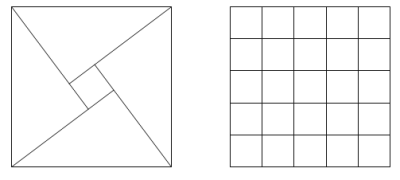

Let $(a, b, c)$ represent the three sides of a right angle triangle with integral length sides. It is possible to place four such triangles together to form a square with length $c$.
For example, $(3, 4, 5)$ triangles can be placed together to form a $5$ by $5$ square with a $1$ by $1$ hole in the middle and it can be seen that the $5$ by $5$ square can be tiled with twenty-five $1$ by $1$ squares.

However, if $(5, 12, 13)$ triangles were used then the hole would measure $7$ by $7$ and these could not be used to tile the $13$ by $13$ square.
Given that the perimeter of the right triangle is less than one-hundred million, how many Pythagorean triangles would allow such a tiling to take place?
solve(max_perimeter=100) → ?solve(max_perimeter=100000000) → ?